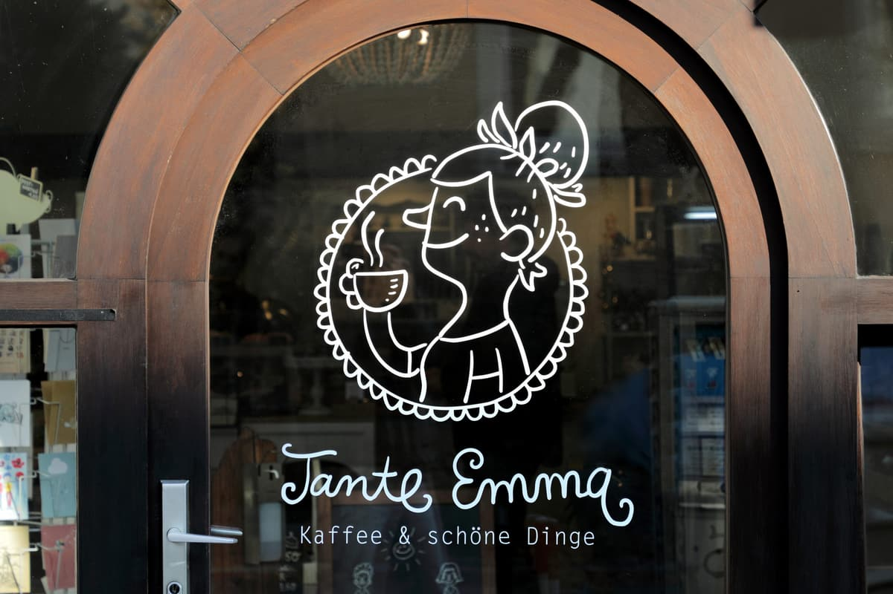

Sarah Eichner
InhaberinEntscheidet, welcher Kuchen heute in die Vitrine kommt, und kümmert sich um Küche und Einkauf.
Kaffee und schöne Dinge
Tante Emma ist aus einem alten Lebensmittelgeschäft geworden, das seit drei Generationen an derselben Ecke stand. Wir haben vieles behalten, nichts weggeräumt, was schön war.
Unsere Geschichte
Angefangen hat alles mit einem Ofen, einem Gebrauchtregal und der Überzeugung, dass ein Viertel einen Ort braucht, an dem man nicht sofort wieder weiter muss.
2016 zog Sarah in die Karlstraße, in einen alten Laden mit Geschichte. Die Theke stand schon, das Schild an der Tür auch — nur der Inhalt hat sich geändert. Aus Regalen mit Konserven wurden Regale mit Tassen, Kuchen und Kerzen.
Heute kommen dieselben Menschen, die damals mit einer Tüte Brot gingen, heute mit einem Cappuccino wieder. Manche bringen Blumen mit, manche einen Kuchen zurück, manche einfach eine Nachricht für die Pinnwand am Eingang.

Die Tür steht seit 2016 so daEin Ofen, zwei Tische und eine Kaffeemaschine. Der erste Kuchen war nach zwei Stunden weg.
Ein Anbau, mehr Platz, ein zweiter Ofen — und seitdem alles, was im Regal steht, hausgemacht.
Wir haben Kerzen, Karten und Gläser ins Sortiment genommen — Dinge, die wir selbst gern verschenken.
Sechs Meter Eiche, gebaut von einem Tischler aus der Nachbarschaft. Jetzt passen alle rein.
Unsere Idee
Wir glauben nicht daran, dass ein guter Ort laut sein muss. Tante Emma soll sich anfühlen wie ein Wohnzimmer, in das man jederzeit kommen darf — aufgeräumt genug, um zu arbeiten, voll genug, um sich zu unterhalten.
Deshalb kochen wir mit dem, was gerade Saison hat, kaufen bei Menschen aus der Nähe ein und lassen den Kuchen stehen, solange er gut ist. Und deshalb steht auf der Tür nicht nur Kaffee und Kuchen, sondern auch schöne Dinge: eine Tasse, eine Kerze, ein Buch, ein Stück Stoff, eine Blume für unterwegs.
 Alles da, nichts zu viel
Alles da, nichts zu viel
„Ein Café ist kein Ort, den man besucht. Es ist ein Ort, an dem man wiederkommt.“Sarah Eichner · Inhaberin
Die Menschen
Drei Menschen, eine Küche, zu viel Geschirr — und immer jemand, der den Kuchen anschneiden kann.
Entscheidet, welcher Kuchen heute in die Vitrine kommt, und kümmert sich um Küche und Einkauf.
Plant die Röstungen, mischt die Mischung und erklärt gern, warum der Filterkaffee heute anders schmeckt.
Steht um fünf auf, damit der Duft um halb sieben durch die Straße geht. Brot, Gebäck, alles mit Teig.
Am liebsten zeigen wir es euch lieber als beschreiben — die Tür ist meist offen.